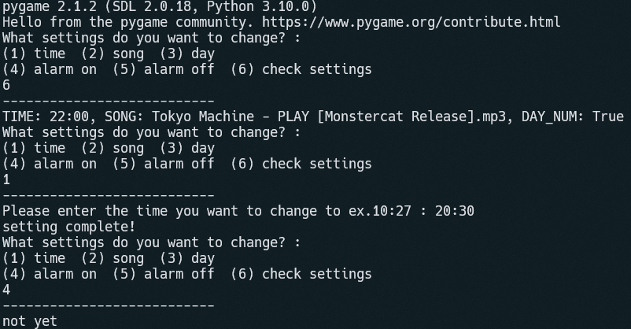

Music Alarm is a simple but valuable tool used in daily life. This project first popped out in my head due to my laze in bed. I found out that a normal alarm clock is no longer practical for me, therefore I decided to make a unique "Music Alarm", which can play any song at a specific time, helping me wake up faster and quickly.
Example Footages
